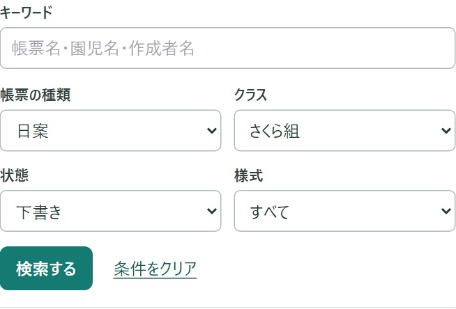
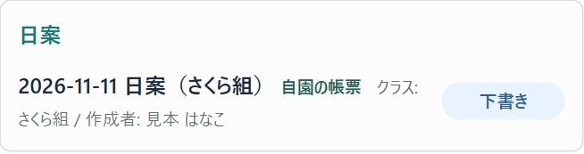
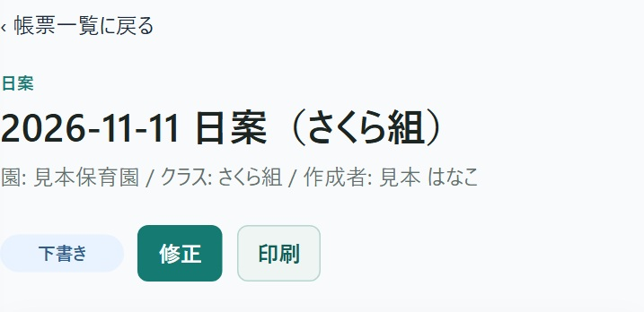

「帳票の種類」で日案、「クラス」でさくら組を選びます。書きかけだけを見たいので、「状態」は下書きにします。最後に「検索する」を押します。
全部の欄を埋める必要はありません。以前の様式だけを探すときは、「様式」で「旧式」を選びます。
「指導計画」を開き、「最近の帳票」の横にある「すべて見る」を押します。ここでは、さくら組の書きかけの日案を例に探します。

「帳票の種類」で日案、「クラス」でさくら組を選びます。書きかけだけを見たいので、「状態」は下書きにします。最後に「検索する」を押します。
全部の欄を埋める必要はありません。以前の様式だけを探すときは、「様式」で「旧式」を選びます。
名前が分かるときは「キーワード」に帳票名・園児名・作成者名の一部を入れて「検索する」を押します。たとえば児童票は、園児の名前でも探せます。

検索欄の下に件数と帳票が出ます。見本ではさくら組の日案2件のうち、下書きは11月11日の日案1件です。日付・クラス・状態が合っていたら、その行を押します。

帳票が開いたら、日付とクラスをもう一度見ます。続きを書くときは、「修正」が表示されていれば押します。
ほかの帳票を見たいときは、画面上の「帳票一覧に戻る」を押します。一覧から開いたときは、そのときの条件で探し続けられます。